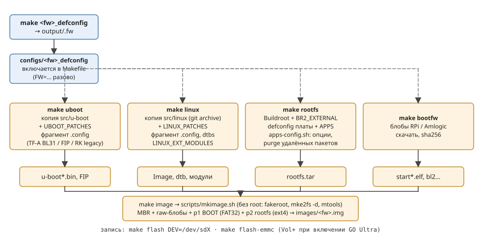

1. Устройство SDK
Идея
Один репозиторий собирает прошивки пяти плат из одних и тех же исходников:
различаются только конфиги. Исходники компонентов — git-сабмодули в src/, и
они никогда не правятся на месте: ядро и U-Boot собираются из копии
закоммиченного дерева с наложенными патчами платы, Buildroot накладывает патчи
пакетов при распаковке. Всё, что получилось, лежит в output/<прошивка>/.
| Компонент | Каталог | Версия | Роль |
|---|---|---|---|
| TF-A (BL31) | src/tf-a |
v2.15.0 | монитор EL3 на Rockchip (GO Advance) |
| U-Boot | src/u-boot |
v2026.07 | загрузчик всех плат, читает extlinux.conf |
| Linux | src/linux |
v7.2.9 | ядро, arm64 и arm |
| Buildroot | src/buildroot |
2026.08 | корневая ФС, тулчейн, пакеты |
| bare_app | apps/bare_app |
свой репозиторий | лаунчер (сабмодуль с LVGL и doomgeneric внутри) |
Дерево репозитория
Makefile оркестратор: цели сборки, умолчания, склейка образа
configs/<fw>_defconfig конфиг прошивки (плоский список make-переменных)
board/<плата>/ всё, что отличает плату:
u-boot/*.config, patches/ фрагмент поверх defconfig U-Boot, патчи
linux/*.config, patches/ фрагмент ядра, патчи (GO Ultra — 31, GO Advance — 3)
linux/<модуль>/ внешние модули ядра (esp8089, rk-vepu-h264, meson-venc)
buildroot/defconfig, overlay defconfig Buildroot платы, её rootfs-overlay, post-build.sh
boot/ файлы раздела BOOT (boot.ini у GO Ultra, config.txt у RPi)
fip/, rkbin/ хеши блобов Amlogic; блобы и утилиты Rockchip
board/common/buildroot/ BR2_EXTERNAL «SDK»: общий overlay (S05data, games-mount,
usb-disk), post-build, пакеты package/<pkg>/
apps/bare_app/ лаунчер; apps/oga-pad — пример приложения
games/ манифест игр, wine.ini и prepare.sh каждой Windows-игры
scripts/ склейка образа, прошивка, игры на карту, управление платой
docs/ документация и книги; docs/wiki — эта вики
dl/ кэш загрузок (общий для всех прошивок)
lab/ -> /media/D/OdroidLab данные вне git: игры, образы, бэкапы, wip
output/<fw>/ результаты сборки прошивки
Правило: плата описывается в board/ и configs/, код живёт в сабмодулях,
результат только в output/. Руками в output/ ничего не правят.
Поток сборки

make <fw>_defconfig только записывает имя прошивки в output/.fw; все
следующие команды без FW= берут её оттуда и включают
configs/<fw>_defconfig прямо в Makefile. FW=ogu make linux действует разово
и выбор не меняет. Компоненты собираются по очереди (.NOTPARALLEL), каждый
со своим -j$(JOBS): верхний make -j запустил бы U-Boot, ядро и Buildroot
одновременно — втрое больше памяти.
| Цель | Что делает | Куда |
|---|---|---|
make uboot |
копия src/u-boot + UBOOT_PATCHES + фрагмент; на Rockchip ещё TF-A и упаковка uboot.img/trust.img (RK_LEGACY), на Amlogic — FIP из скачанных блобов (scripts/amlogic-fip.sh) |
images/u-boot*.bin, u-boot-fip.bin |
make linux |
git archive из src/linux в output/<fw>/linux-src, патчи, фрагмент .config, dtb, внешние модули |
linux-install/: Image, dtb, модули |
make rootfs |
Buildroot с BR2_EXTERNAL=board/common/buildroot, defconfig платы + приложения из APPS |
images/rootfs.tar |
make bootfw |
блобы прошивки RPi (проверка sha256) | images/ |
make image |
scripts/mkimage.sh: без root (fakeroot, mke2fs -d, mtools) |
images/<fw>.img (+ <fw>-emmc.img) |
make flash DEV=… |
запись с проверками (scripts/flash.sh); flash-boot — только загрузчик и BOOT |
карта |
make flash-emmc |
eMMC GO Ultra, показанная U-Boot как USB-диск (Vol+ при включении) | eMMC |
У каждого компонента есть -menuconfig, -savedefconfig, -configure, -clean;
make rootfs-make BR=<цель> вызывает любую цель Buildroot (vcmi-dirclean,
bare-app-rebuild, busybox-menuconfig). .config компонента пересоздаётся,
когда меняется его defconfig или фрагмент (.sdk-inputs в каталоге сборки
помнит, из чего он сделан); правки из menuconfig живут до этого момента.
Конфиг прошивки
configs/ogu_defconfig — это просто make-переменные с комментариями. Самые важные:
CROSS_COMPILE := aarch64-linux-gnu-
UBOOT_DEFCONFIG := odroid-go-ultra_defconfig
UBOOT_PATCHES := $(BOARD_DIR)/u-boot/patches
LINUX_FRAGMENTS := $(BOARD_DIR)/linux/ogu.config
LINUX_PATCHES := $(BOARD_DIR)/linux/patches
LINUX_EXT_MODULES := $(BOARD_DIR)/linux/meson-venc
LINUX_CMDLINE := rootwait rw console=ttyAML0,115200n8 console=tty1 fbcon=rotate:3 quiet panic=10
APPS := bare-app # приложения из apps/ в rootfs
APPS_AUTOSTART := bare-app # init-скрипт S<INIT_ORDER>bare-app
APPS_CONFIG := bare-app.DEFCONFIG=ogu_defconfig bare-app.DOOM_WAD=y \
bare-app.HOMM3=y bare-app.HALFLIFE=y bare-app.WINE=y \
bare-app.SDL=y bare-app.STREAM=y bare-app.DOOM3=y bare-app.RTCW=y
IMAGE_RAW := $(IMAGES_DIR)/u-boot-fip.bin@1
IMAGE_DATA_START_MB := 2192 # где начинается /data; без SIZE — до конца диска
IMAGE_DISK_ID := 0x4f475531 # root=PARTUUID=<id>-02
Полный список переменных и умолчаний — docs/config.md. Ключевая
мысль про APPS_CONFIG: игра или движок включается в одном месте — строкой
bare-app.<ИМЯ>=y. Скрипт scripts/apps-config.sh превращает её в опции
Buildroot (BR2_PACKAGE_BARE_APP_<ИМЯ>), пакет bare-app сам тянет select
движка и передаёт в Kconfig лаунчера CONFIG_GAME_<ИМЯ>. Если опцию выключили,
SDK удаляет файлы ушедшего пакета из target/ (Buildroot сам этого не делает, и
выключенный Wine остался бы в инкрементальном образе).
Пакеты Buildroot SDK
board/common/buildroot/package/ — BR2_EXTERNAL с именем SDK. Новый пакет
подхватывается .mk-файлом сам, а его Config.in надо вписать в
board/common/buildroot/Config.in.
| Пакет | Что | Патчей |
|---|---|---|
bare-app |
лаунчер из apps/bare_app (SITE_METHOD = local), его опции-игры, init-скрипт, chocolate-doom.ini, патчи SDL2 с драйверами bareapp |
SDL2: 5 |
vcmi |
движок Героев III с мостом в bare_app, свои патчи SDL2_mixer | 13 (+2) |
xash3d-fwgs, hlsdk-portable |
Half-Life: движок с платформой bare_app, код игры, русские строки | 10 |
wine-wow64, wowbox64 |
Wine 11.0 в режиме WoW64 (32-битные DLL собирает llvm-mingw), Box64 как эмулятор x86 |
25, 3 |
mesa-panfrost |
Mesa 25.0 только с panfrost и EGL/GLES (Mesa Buildroot для panfrost тянет LLVM) | 5 |
rbdoom3-bfg, iortcw |
DOOM 3 BFG и RTCW как SDL2-игры; каждый ставит свой game.ini |
19, 5 |
doom1-wad, esp8089-firmware, meson-venc-firmware, llvm-mingw, oga-pad |
данные и прошивки |
Патчи: где и как
| Что | Где | Как пересобрать после правки |
|---|---|---|
| ядро платы | board/<плата>/linux/patches/*.patch |
make linux (копия дерева заново; ~1,8 ГБ на копию) |
| U-Boot платы | board/<плата>/u-boot/patches/ |
make uboot |
| пакет Buildroot | package/<pkg>/*.patch |
make rootfs-make BR=<pkg>-dirclean && make rootfs — именно dirclean, не rebuild: патчи ложатся только на свежераспакованный архив |
| SDL2 для игр | package/bare-app/sdl2/ |
sdl2-dirclean |
| SDL2_mixer для VCMI | package/vcmi/sdl2_mixer/ |
sdl2_mixer-dirclean |
Патч — обычный git format-patch из рабочего дерева сабмодуля или из
распакованного пакета в output/<fw>/buildroot/build/<pkg>-<версия>. Первая
строка темы — что меняет, в теле — зачем и как измерено. Нумерация сплошная.
Подробнее — docs/patches.md.
Приложения в apps/
Каталог apps/<имя>/ с пакетом в board/common/buildroot/package/<имя>/ —
это «приложение», которое включается только через APPS. SDK накладывает его на
defconfig Buildroot платы (output/<fw>/buildroot/defconfig.sdk); в defconfig
платы приложения не пишут. make apps-list показывает, что есть.
Что где пересобирать (шпаргалка)
| После правки | Команда | Время |
|---|---|---|
apps/bare_app |
make rootfs-make BR=bare-app-rebuild && make |
минуты; без прошивки — tools/oga.sh run или tar | ssh |
| патча VCMI / Wine / Mesa | make rootfs-make BR=<pkg>-dirclean && make |
VCMI и Wine — самые долгие (часы) |
| патча ядра | make linux && make |
от минут |
| конфига прошивки | зависит от переменной; make image всегда |
секунды |
games/* или манифеста |
ничего: scripts/games-image.py --card … --reuse --games <id> |
На машине сборки 14 ГБ памяти: один тяжёлый компонент за раз, VCMI собирается
в 4 потока по ~1 ГБ (VCMI_JOBS). Это одна из причин .NOTPARALLEL.